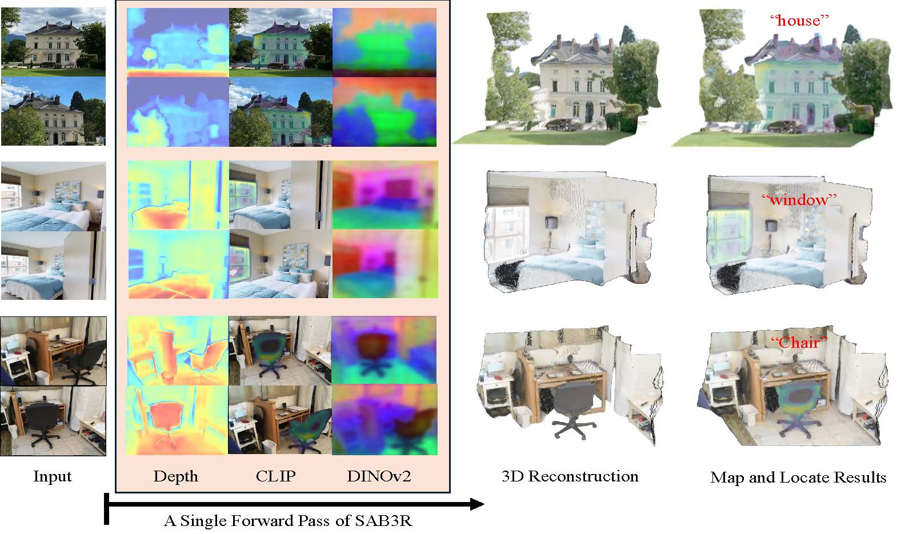
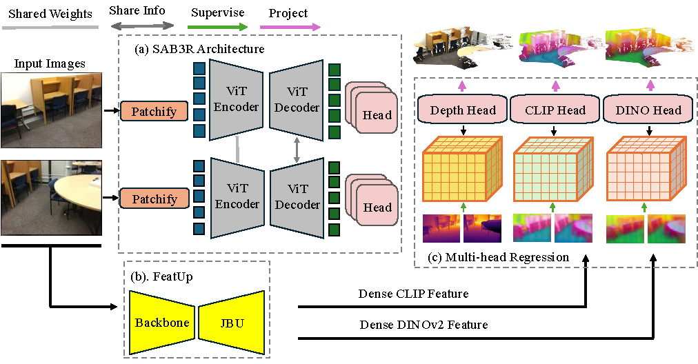
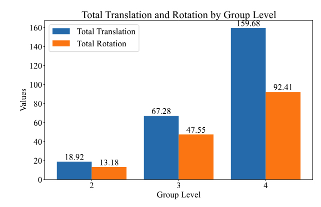

Given an unposed input video, we show ground truth for: open-vocabulary semantic segmentation (per-pixel labels for the prompt "a black office chair"), 3D reconstruction (ground-truth point cloud), and the proposed Map and Locate task (open-vocabulary segmentation and point cloud). The Map and Locate task: (1) encompasses both 2D and 3D tasks, (2) bridges reconstruction and recognition, and (3) introduces practical questions in robotics and embodied AI.
Abstract
We introduce a new task, Map and Locate, which unifies the traditionally distinct objectives of open-vocabulary segmentation—detecting and segmenting object instances based on natural language queries—and 3D reconstruction, the process of estimating a scene's 3D structure from visual inputs. Specifically, Map and Locate involves generating a point cloud from an unposed video and segmenting object instances based on open-vocabulary queries. This task serves as a critical step toward real-world embodied AI applications and introduces a practical task that bridges reconstruction, recognition and reorganization.
To tackle this task, we introduce a simple yet effective baseline, which we denote as SAB3R. Our approach builds upon MASt3R, a recent breakthrough in 3D computer vision, and incorporates a lightweight distillation strategy. This method transfers dense, per-pixel semantic features from 2D vision backbones (e.g., CLIP and DINOv2) to enhance MASt3R's capabilities. Without introducing any auxiliary frozen networks, our model generates per-pixel semantic features and constructs cohesive point maps in a single forward pass.
Compared to separately deploying MASt3R and CLIP, our unified model, SAB3R, achieves superior performance on the Map and Locate benchmark. Furthermore, we evaluate SAB3R on both 2D semantic segmentation and 3D tasks to comprehensively validate its effectiveness.

Our method, SAB3R, a semantic-augmented backbone for 3D reconstruction, enables zero-shot open-vocabulary segmentation and 3D reconstruction from unposed images in a single forward pass. By jointly performing reconstruction and open-vocabulary semantic segmentation, SAB3R introduces a novel capability that unifies these tasks within a single framework.
SAB3R: Network Architecture
SAB3R distills dense features from CLIP and DINO into the MASt3R framework, enriching it with 2D semantic understanding. Each encoder-decoder pair operates on multi-view images, sharing weights and exchanging information to ensure consistent feature extraction across views. The model simultaneously generates depth, dense DINOv2, and dense CLIP features, which are then used for multi-view 3D reconstruction and semantic segmentation. This architecture enables SAB3R to seamlessly integrate 2D and 3D representations, achieving both geometric and semantic comprehension in a unified model.

Methods Architecture. We distill dense features from CLIP and DINO into the MASt3R framework, enriching it with 2D semantic understanding. Each encoder-decoder pair operates on multi-view images, sharing weights and exchanging information to ensure consistent feature extraction across views. The model simultaneously generates depth, dense DINOv2, and dense CLIP features, which are then used for multi-view 3D reconstruction and semantic segmentation.
Additional Map and Locate Details
The Map and Locate framework is evaluated on the ScanNet dataset, a large-scale indoor scene dataset providing RGB-D sequences, camera poses, and semantic and instance annotations. For our experiments, we selected 10 scenes from the validation split, featuring diverse object layouts and camera trajectories. Across these scenes, there are 436 objects with semantic and instance-level ground truth annotations.
For evaluation, we constructed 60 image groups in total, with each scene contributing 2 sets of groups containing 2, 3, or 4 images. Image selection followed these criteria:
Object visibility: Objects within each group are visible across multiple images for reliable localization and mapping.
Viewpoint diversity: Images are selected from varying camera viewpoints to test robustness to occlusion and perspective changes.
Each group is paired with its corresponding RGB images, depth maps, camera poses (intrinsics and extrinsics), and semantic and instance labels, providing a comprehensive benchmark for evaluating mapping accuracy and object localization performance.
The dataset statistics visualization below illustrates camera translation differences and rotation differences at different group levels. Translation differences are computed as the Euclidean distance between translation vectors, while rotation differences are calculated as the geodesic distance on the rotation space \( SO(3) \). As the number of views increases, these differences grow, showcasing the variability in camera poses. Despite this variability, our framework demonstrates consistent performance across all group levels, highlighting its robustness.

Camera Distributions. Camera translation differences and rotation differences at different group levels.
Sparse View Performance Comparison
This section presents the performance comparison of different methods across sparse view configurations (2, 3, and 4 views). Metrics include mean Intersection over Union (mIoU), Accuracy, Mean Completeness (mComp.), and Median Completeness (mdComp.). Params and FLOPs refer to the number of parameters and computational cost per frame. Our method, SAB3R, consistently outperforms the baseline across all configurations, demonstrating its robustness and efficiency in integrating semantic and geometric understanding.
Model
Params
FLOPs
Sparse View = 2
Sparse View = 3
Sparse View = 4
mIoU
Acc.
mComp.
mdComp.
mIoU
Acc.
mComp.
mdComp.
mIoU
Acc.
mComp.
mdComp.
Baseline
838M
248G
4.57
18.10
0.64
0.67
6.03
21.26
0.68
0.71
5.12
19.31
0.68
0.70
LSM
1B
592G
21.40
42.34
0.72
0.80
-
-
-
-
-
-
-
-
SAB3R (C)
729M
218G
17.26
41.11
0.73
0.75
22.83
53.19
0.78
0.81
19.92
48.07
0.77
0.80
SAB3R (CD)
729M
218G
17.50
42.72
0.73
0.76
22.94
52.86
0.77
0.80
20.31
46.26
0.75
0.78
Performance comparison across different sparse view configurations (2, 3, and 4 views) using mIoU, Accuracy, Mean Completeness, and Median Completeness. Params and FLOPs refer to the number of parameters and computational cost per frame. SAB3R methods demonstrate superior performance across most metrics while maintaining computational efficiency.
3D Point Cloud Visualization
Explore the 3D point cloud reconstruction using the interactive viewer below. The visualization demonstrates the robustness of the SAB3R framework, enabling detailed geometric and semantic understanding of 3D structures. Click and drag to navigate the scene!
Select Visualization Type
Please choose the type of scene visualization.
RGB shows the raw reconstructed point cloud,
CLIP is colored using PCA,
and DINO is colored based on predicted semantic features.
Select a Scene
Choose one of the five available scenes to explore different views and configurations of the 3D point cloud. Each scene offers unique perspectives on the data.
Visualization Viewer
Use the interactive viewer below to explore the selected 3D point cloud. Click and drag to navigate within the scene.
Currently viewing:RGB visualization of Scene 050
Citation
@article{chen2025sab3rsemanticaugmentedbackbone3d,
title={WildRayZer: Self-supervised Large View Synthesis in Dynamic Environments},
author={Xuweiyi Chen and Tian Xia and Sihan Xu and Jianing Yang and Joyce Chai and Zezhou Cheng},
year={2025},
eprint={2506.02112},
archivePrefix={arXiv},
primaryClass={cs.CV},
url={https://arxiv.org/abs/2506.02112},
}